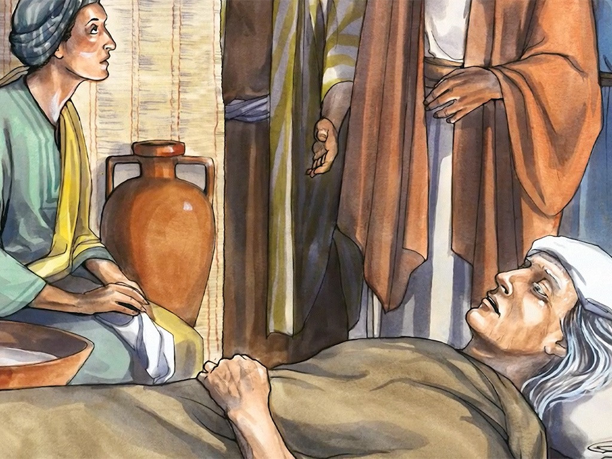
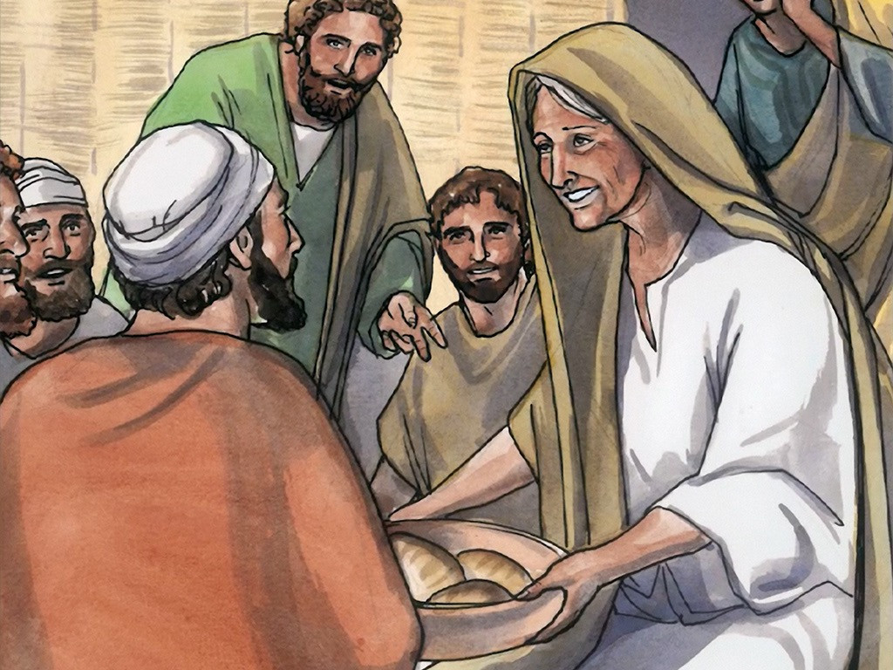

Lord Heals The Mother Of Peter's Wife
When Jesus came into Peter’s home, He saw his mother-in-law lying sick in bed with a fever. He touched her hand, and the fever left her; and she got up and waited on Him. When evening came, they brought to Him many who were demon-possessed; and He cast out the spirits with a word, and healed all who were ill. This was to fulfill what was spoken through Isaiah the prophet: “HE HIMSELF TOOK OUR INFIRMITIES AND CARRIED AWAY OUR DISEASES.”
Matthew 8:14-17
- 
- 